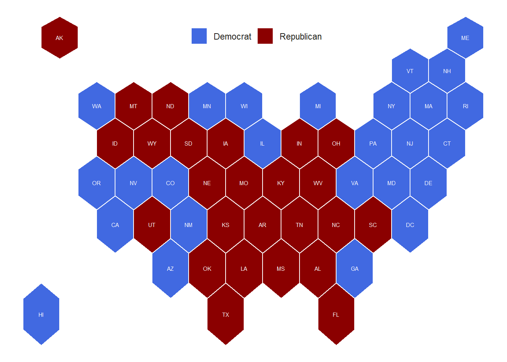
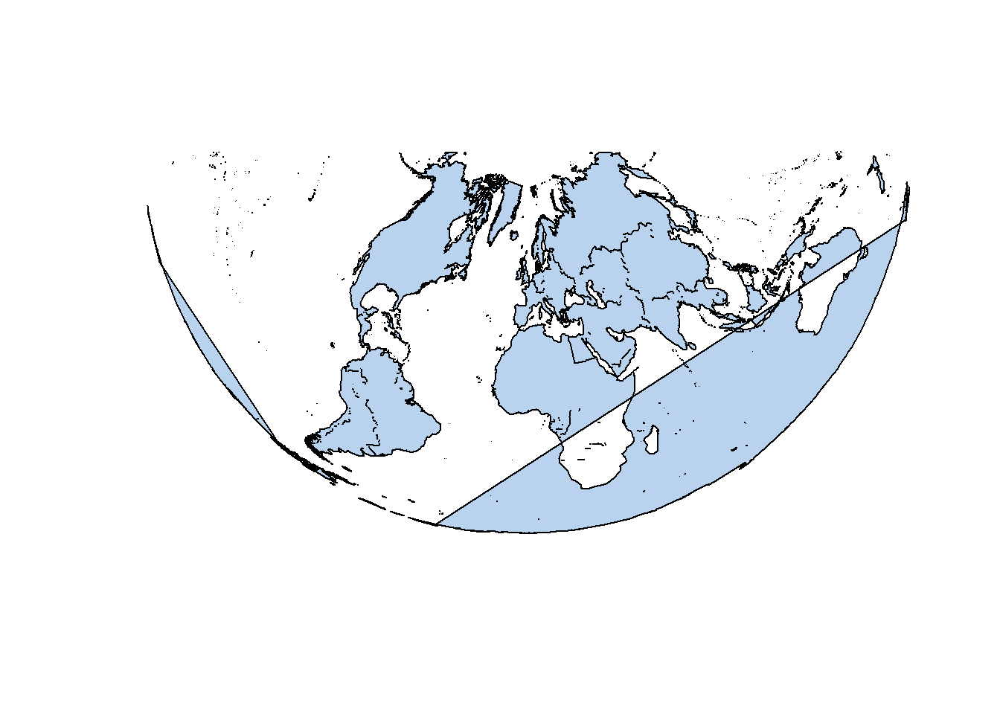
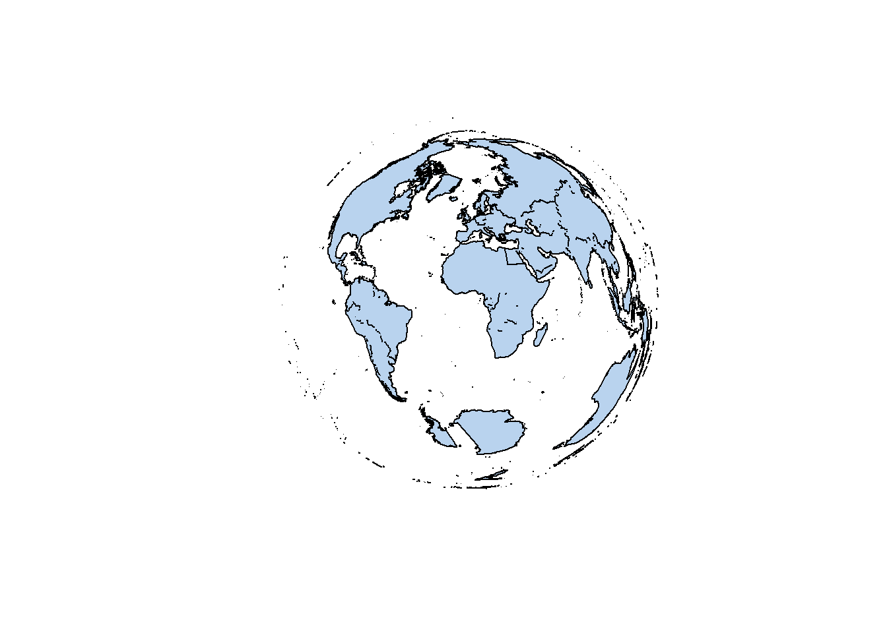
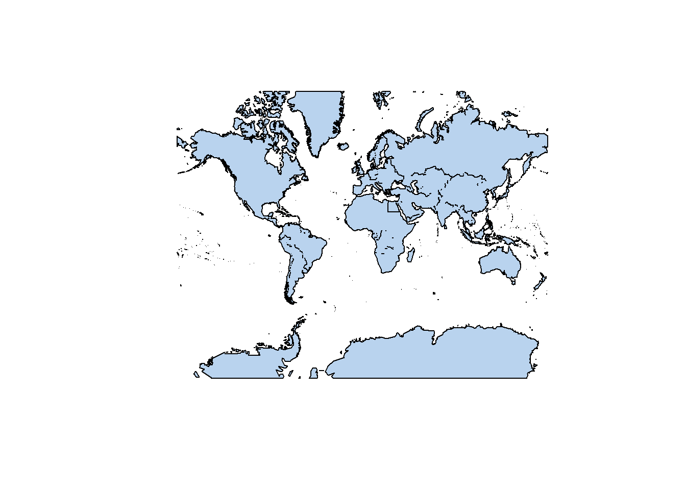
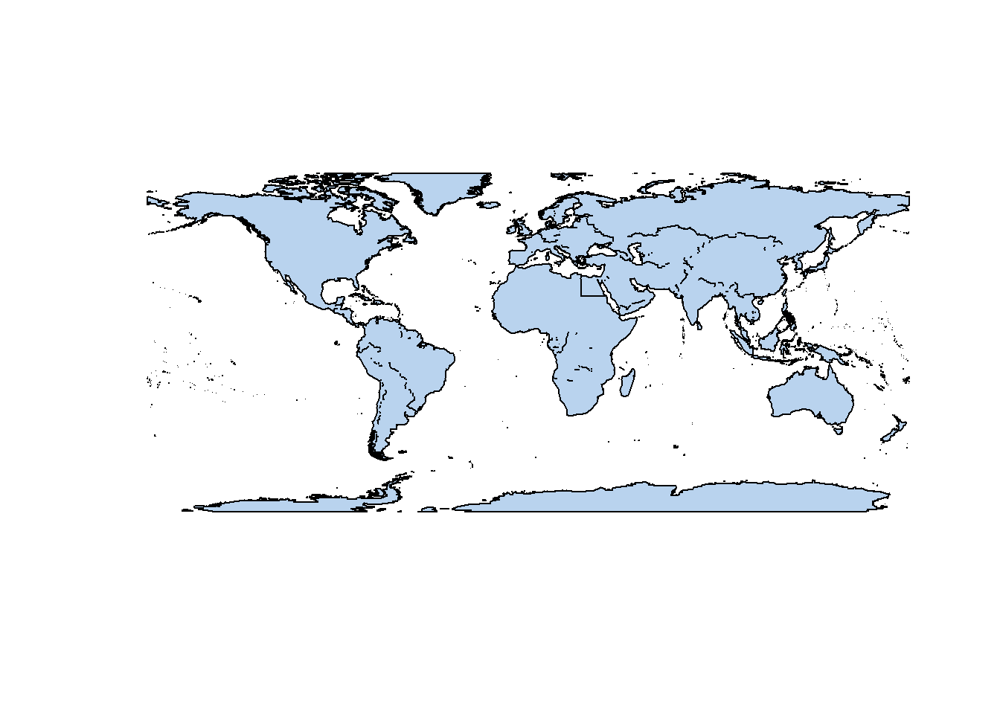
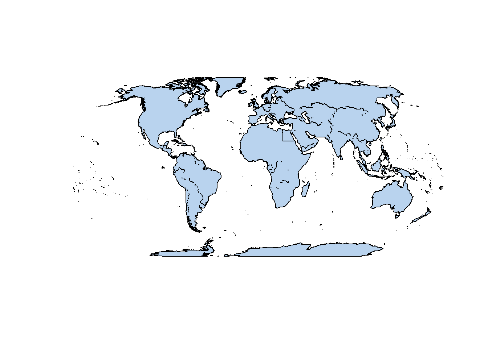
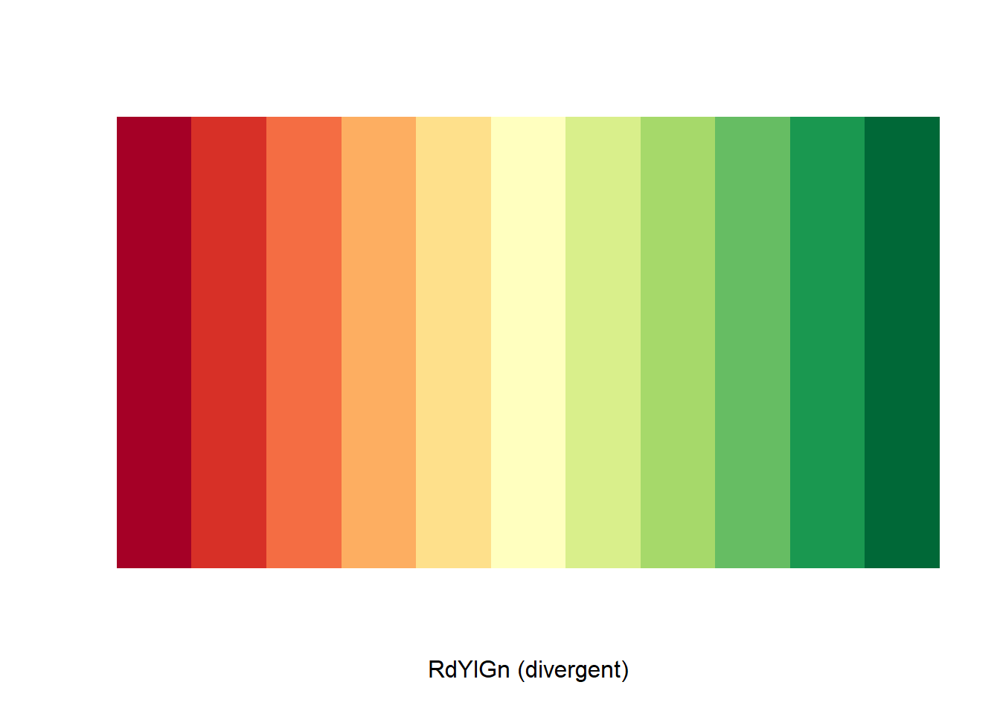
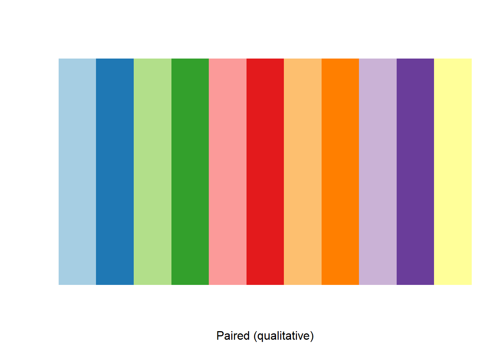

Introduction to Cartography
Cartography is the study and practice of creating charts and maps based on geographical layout.
It combines science and art to represent reality (or an imagined reality) so that spatial information can be communicated effectively.
History
Before jumping into the art of map making, let’s explore the history of cartography through some notable maps.
Babylonian Map of the World
The Babylonian Map of the World or Imago Mundi is a Babylonian clay tablet containing a labelled illustration of the known world dated to roughly the 6th century BC.

Anaximander map
This map was one of the first maps of the world which was circular in form and showed the known lands grouped around the Aegean Sea at the center, surrounded by the ocean.

Ptolemy map
Ptolemy’s world map represents how the world was known to the Hellenistic society in the 2nd century. His book Geographica was written around the year 150 AD and contains the first reference to the latitude and longitude system which had a significant impact on the work of later cartographers.

Tabula Rogeriana
Tabula Rogeriana is a world map created by the Arab geographer Muhammad al-Idrisi in 1154. The map was later used by Christopher Columbus and Vasco Da Gama for their voyages in America and India.

Mappa mundi
Mappa mundi is the largest and most elaborately drawn and coloured medieval map. It is displayed at Hereford Cathedral in England.

Cantino planisphere
Made by an anonymous cartographer, this map depicts the world as it became known to the Europeans after the great exploration voyages at the end of the 15th and beginning of the 16th century.

Mercator map
The Mercator map was created by Flemish geographer and cartographer Gerardus Mercator in 1569. This was the first attempt to project earth on a flat surface.

John Snow’s map
In 1854 Doctor John Snow mapped the cases of the deadly cholera epidemic in London’s Broad Street region and was able to trace the cholera outbreak to a single infected water pump. Snow’s research was the first example of combining public health research and geography.

Hurricane map
Thanks to the advance of technology, maps nowadays are predominantly made with computer software. The map below was made using one of the ArcGIS products. It shows all the hurricane tracks since 1851, symbolised as fireflies, utilising lightsaber colours. Find out more about how this map was made here.
Interactive story maps
The use of interactive maps to tell stories is increasingly common, especially in journalism. The interactive story map below was made by The New York Times and it tells the story of how the virus got out of Wuhan. Click on the image to see the map.
Let’s now think about the process of making maps and some of the things that should be considered.
Purpose of the map: Why am I making this map? What is the story that I want to tell?
Audience: Who is it for? Novices? Experts? Why are they interested?
Map type: What do I want to show with the map? What kind of data am I using?
Map design: Is my map easy to read and interpret? Am I using visual variables and hierarchy in a right way? Is my map the right scale?
Also, keep in mind that maps act as a communication tool so it is very important to remain truthful and impartial during the map making process.
Mapping: Mapping refers to all of the processes of producing a map: collecting data, designing and preparing for distribution in hardcopy or for the Internet.
Cartography: Cartography is a broader discipline than mapping as it also includes the study of the philosophical and theoretical bases of the rules for mapmaking.
Map types
There are many different types of maps, which are usually classified according to what kind of information they want to show.
General or reference maps
Reference maps are those that are constructed for a general audience and contain a variety of natural and man-made features.
Thematic maps
Thematic maps highlight features, data (qualitative, quantitative or both) or concepts.
Qualitative maps show the spatial distribution or location of single theme of nominal data.
Quantitative maps display the spatial aspects of numerical data. These can be choropleth maps (for continuous data), dot and proportional symbol maps (for discrete data).
- Cartogram is a type of thematic map where data is mapped by altering the map’s shape or size.
Other cartogram types include hexmap, gridmap and tilegram.
Topographic maps
Maps that show a topographic description of an area with the use of contour lines or shades to show elevation.
Topological maps
Maps that are only concerned with relative locations of features on the map e.g. subway maps.

Cartometric maps
Maps that focus on specific measurements such as area or distance e.g. nautical and aeronautical charts.

Map design
When it comes to designing a map there is no one formula for a good design, however, key things needs to be considered. These include projection, symbology, scale, labelling and layout.
Projection
Before we talk about how map projections work, let’s imagine the earth (3D) flattened out (2D). You will notice that the shape of the continents will be different.

Distortion occurs because the curved surface becomes flat subsequently affecting shape, area and distance. The different types of projections will preserve and/or distort different attributes.
Map projection is the process of converting the 3 dimensional spherical earth to a 2 dimensional flat surface.
The classification of projection can be based on the projection surface (on which we project to) and the properties that the projection preserves.
Projections by surface
1, Planar/Azumithal: A plane is placed over the globe.
Depending on the position of the plane this can be either polar, equatorial or oblique.

The polar projection has three different perspectives.
Gnomonic: Projection point from the centre of the globe.
Stereographic: Projection point from the opposite side of the globe.
Orthographic: It shows a hemisphere of the globe as it appears from outer space.

2, Conical: A cone is placed over the globe. Conic projection can be either tangent or secant.
During conic tangent projection, the cone is only touching the surface along a latitude line, while during conic secant projection the cone is cutting into the surface along two latitude lines, which will produce a more accurate projection.

3, Cylindrical: A cylinder is placed over the globe that can touch either along a latitude line (normal), a longitude line (transverse) or another line (oblique).

Projections by preservation of metric property
Equal-area projections preserve areal relationships.
Conformal projections preserve local angles.
Azimuthal projections are planar projections on which correct directions from the center of the map to any other point location are maintained.
Equidistant projections displays the true distance from one or two points on the map to any other point on the map or along specific lines.
Compromise projections do not entirely preserve any property but instead provide a balance of distortion between the various properties.
Note: Tissot’s indicatrix is a method developed to illustrate and quantify distortion across a map. The small circles placed on the surface of a reference globe will be distorted depending on the type of projection. The maps below show how the circles vary in size, shape and orientation because of the projection used.


Some projection examples:
Equal Area Cylindrical
This type of projection is undistorted along the Equator but distortion occurs towards the Poles.
Lambert Equal Area Conic
Scale and shape are not preserved in this type of projection but distortion is minimal between the two standard parallels 20°N and 50°N.
Lambert Azimuthal Equal Area
This type of projection shows all areas but angles aren’t represented accurately.
Mercator
The Mercator projection has been widely used for nautical purposes. It preserves angles and shapes, but distorts the size of the objects from the Equator to the Poles.
Universal Transverse Mercator
With this type of projection distortion becomes worse as you move away from the central meridian.
Robinson
The Robinson projection was created to show the whole globe on a flat image.
Van der Grinten
This projection is neither equal area (preserves the area of displayed features) nor conformal (preserves the local shape of small areas); it shows the globe on a circle with distorted polar regions.

Spilhaus
The Spilhaus projection was authored by Athelstan F. Spilhaus, a South African-American geophysicist and oceanographer, in 1942. It centers around Antarctica presenting the ocean as one body of water.

When making a map, projection should be considered based on the data type and how the final map will be used.
Note
External links to visit:
Symbology
Location and properties are represented by symbols with different size, shape, colour, and pattern. Map symbol design relies heavily on the proper use of the visual variables shown below.

Colours
Things around us appear to have different colours because they either absorb and reflect them or transmit them. For example, objects will absorb colours: a blue shirt looks blue because the dye molecules in the fabric have absorbed the wavelengths of light from the violet/blue end of the spectrum and blue light is the only light that is reflected from the shirt. TV and computer screens on the other hand will transmit colours.
During the map making process, colours will have an important role in emphasising qualitative and quantitative data. colour is also one of the first components noticed by end-users.
Colours are specified by mixing additive or subtractive colours.
Additive colours
RGB: Red, green and blue produce the colour white when added together.

Modern computers can display over 16 million different colours using 255 shades of each red, green and blue. The possibilities for mixing these three colours together can be represented as a three dimensional coordinate plane with the values for red, green and blue on each axis. This coordinate plane yields the RGB colour space.

If all three colours are zero, it means that no light is emitted and the resulting colour is black (0, 0, 0). If all three colours are set to their maximum values, the resulting colour is white (255, 255, 255).
Two alternative representations of the RGB colour space were developed for computers to allow map makers (and designers) to mix colours more intuitively and work directly with visual variables such as hue, saturation, value/light.
HSY/HSL values are given on a cylindrical coordinate systems:
Hue: Angle around the central vertical axis.
Saturation: Distance from the central axis.
Value/Lightness: Distance along the central axis.

Hue is the shade or tint of a colour and it is used to identify map features. For example blue hues are used to illustrate ocean depth.
Saturation refers to the intensity of colour. As the saturation increases, the colours appear to be more pure, while as the saturation decreases, the colours appear to be more pale.
Value/light is used to represent numerical difference on a quantitative scale. For example a choropleth map that shows population difference across countries.

Subtractive colours
CMYK: Cyan, magenta, yellow and black (key) are the subtractive colours. Each one absorbs one of additive colours: cyan absorbs red, magenta absorbs green and yellow absorbs blue. Adding two subtractive colours together will transmit one of the primary colours. This kind of colour model is used in printing.

Selecting colours
All GIS software will allow the user to select colours using the HSV and RGB colour space.

Html notation
Other then the RGB and HSL values used to pick a colour, web pages also use Html notations in hexadecimal format to display a colour.
Hexadecimal is a numbering system containing 16 sequential numbers as base units, including 0. It is a convenient way to express binary numbers in modern computers as one hexadecimal digit can represent the arrangement of four binary digits, while two hexadecimal digits can represent eight binary digits.

A HEX colour is expressed as a six-digit combination of numbers and letters defined by its mix of red, green and blue (RGB). For example: red = #FF0000, black = #000000, white = #FFFFFF.
See the interactive colour picker widget below for more HEX colour options. Click into the rectangle.
When selecting colours, it is also important to consider colour combinations so that the final map is aesthetically pleasing. The examples below are based on colours arranged on the colour wheel (arranged according to their chromatic relationships).
Complementary colours are opposite from each other.
Analogous colours are directly adjacent to the base colour.
Triadic colours are three, equidistant colours.
Split complementary colours use two adjacent colours from the base complementary.

Note: The website color-hex is an excellent resource to find the right colours for a map.
Colour schemes
When a map is made, the colours used can be structured in different ways to reflect the quantitative and qualitative character of the data.
- Sequential: Vary lightness to show ordered or numeric data (less > more).

- Diverging: Used when the data have different extremes with a mid-point (above / below).

- Qualitative: Used to represent differences between map features (categories).

Note: Maps designed for screen use the RGB/HSL colours while maps designed for printing use CMYK.
Scale
When choosing a symbology, map scale (how distance is shown) should also be considered. Scale is expressed as a ratio of the map distance to the ground distance. For example, a scale of 1:10 means that one map unit represents 10 of the same units on the ground. So if two points located 10 km apart are shown 1 cm apart on a map, then the scale of the map is 1 cm to 10 km.
Scale is presented either as a word statement, ratio, fraction or scale bar.
In terms of scale, there are also a distinctions between a small scale and a large scale map.
Large scale maps show an area with large amount of detail.
Small scale maps show an area with a small amount of detail.

Labelling
Labelling helps recognise map features so it should be designed and positioned well to be effective. Good labelling considers order, placement, colours, font styles, type effect and sizing.
Layout
When considering the placement of elements (map, title, subtitle, legend, scale, north arrow, additional text and so on), it is important to take into account visual balance (vertical and horizontal alignment of the elements) and visual hierarchy (arrangement of elements) so that it is aesthetically pleasing and also signifies their order.
Summary
Cartography is the study and practice of creating charts and maps based on geographical layout.
Mapping refers to all of the processes of producing a map: collecting data, designing and preparing for distribution in hardcopy or for the Internet.
Map types are reference, thematic, topographic, topological and cartometric.
Map projection is the process of converting the spherical earth to a flat surface. The classification of projection can be either by surface and by preservation of property.
Map symbololgy relies heavily on the proper use of visual variables.
Colours have an important role in emphasising qualitative and quantitative data presented on a map.
Scale refers to the spatial extent of the area on a map.
Labelling helps recognise map features and provides clarity.
The final map output should be balanced, clear, logical, with the map elements aligned (title, subtitle, legend, scale, north arrow, additional text, credit, copyright) in the right order.